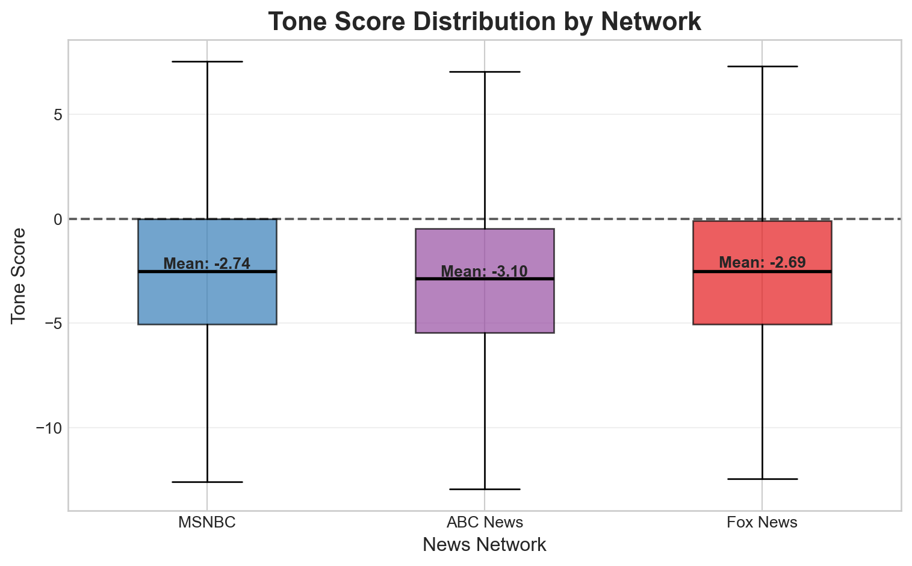

In this analysis, Fox News is generally regarded as a right-leaning outlet, MSNBC as left-leaning, and ABC News as a centrist source. These distinctions help contextualize differences in tone over time, as each network’s political orientation may influence how stories are framed and presented to their audiences.
1.1 Overview
This section examines long-term sentiment trends across three major U.S. news networks—Fox News, MSNBC, and ABC News—using tone scores derived from the Global Database of Events, Language, and Tone (GDELT) from 2015 through 2025. These scores quantify the overall tone of news articles on a continuous scale, offering insight into the emotional framing of events and issues over time.
Rather than centering on specific political events, this analysis takes a broad temporal view to uncover overarching trends in news tone. We investigate whether certain networks consistently portray the news with a more positive or negative tone, and how those patterns may shift across months and years.
1.2 Understanding GDELT Tone Scores
Before diving into the analysis, it’s essential to understand how GDELT tone scores are computed and what they represent. These scores provide a quantitative measure of emotional tone in global news coverage, enabling systematic comparisons across sources and time periods.
Tone Score: This metric typically ranges from -10 (extremely negative) to +10 (extremely positive), with 0 indicating a neutral tone. It reflects the overall sentiment conveyed in a news article or segment.
Calculation Method: GDELT applies natural language processing (NLP) techniques to extract sentiment by analyzing the frequency and intensity of positive and negative language within each document.
Composite Measure: The tone score is derived as the difference between positive and negative sentiment components, providing a net emotional tone. In later sections, we’ll explore these components individually for a more detailed breakdown.
Higher tone scores indicate a stronger presence of positive language, while lower scores reflect more negative framing. These values allow us to track and visualize long-term sentiment trends, evaluate tone consistency or volatility, and compare differences in emotional framing across news networks with varying political orientations.
1.3 Dataset Overview
Note on Sample Sizes: The data shows a smaller sample for MSNBC compared to Fox News and ABC News. These differences reflect availability via GDELT’s API. This discrepancy should be considered when interpreting results, as it may impact the representativeness of trends for MSNBC.
Code
# Reorder the article countsordered_networks = ['MSNBC', 'ABC News', 'Fox News']article_counts = df['network'].value_counts().reindex(ordered_networks)# Plotplt.figure(figsize=(8, 4))bars = plt.bar(article_counts.index, article_counts.values, color=[NETWORK_COLORS[network] for network in article_counts.index])plt.title('Number of Articles by News Network', fontsize=14, fontweight='bold')plt.xlabel('News Network')plt.ylabel('Number of Articles')plt.xticks(rotation=0)plt.grid(axis='y', alpha=0.3)# Add count labels on top of the barsfor bar in bars: height = bar.get_height() plt.text(bar.get_x() + bar.get_width()/2., height +0.1,f'{int(height):,}', ha='center', va='bottom', fontweight='bold')plt.tight_layout()plt.show()
1.4 Tone Distribution Analysis
The dashed horizontal line at 0 represents a neutral tone, serving as a visual reference point to highlight how all three networks tend to lean toward negative sentiment in their reporting. This trend may reflect the nature of media content itself, where negative events often receive more attention and coverage due to their perceived newsworthiness.
All three news networks skew slightly negative in their average tone scores, consistent with prior findings that news coverage tends to focus more on conflict, controversy, and crisis. Fox News has an average tone score of –2.69, MSNBC averages –2.74, and ABC News is the most negative on average at –3.10.
While the overall shapes of the tone distributions are broadly similar, a few important distinctions emerge. ABC News, despite being considered a centrist outlet, exhibits a slightly more negative average tone and a wider distribution, indicating greater variability in emotional framing across its stories. This suggests that ABC may present a broader range of sentiment—from highly negative to moderately positive—compared to the other networks, which tend to cluster more tightly around their respective means.

Figure 1: Tone score distribution across news networks
1.5 Outlier Analysis of Tone Scores by Network
The bar chart above visualizes the number of tone score outliers—both negative and positive—for each news network, based on the 1.5×IQR rule.
ABC News has the highest number of outliers overall, with 1,733 negative and 643 positive outliers. This aligns with the earlier observation of ABC’s wider tone distribution, suggesting a greater range in emotional framing.
Fox News reports 1,142 negative and 449 positive outliers, placing it in the middle across both categories.
MSNBC, notably, shows 1,393 negative and 548 positive outliers—despite having fewer total articles in the dataset compared to ABC and Fox. This indicates that MSNBC’s tone scores, while stemming from a smaller sample, exhibit a relatively high rate of extreme sentiment (especially on the negative end).
This pattern reinforces earlier findings that MSNBC’s tone distribution is highly skewed and variable, and that ABC News, though centrist in political alignment, features the most extreme tone scores overall. Outliers play a key role in revealing how each network diverges from neutral framing, offering insight into the intensity of sentiment conveyed over time.
The analysis spans a full decade, capturing evolving sentiment during a wide range of historical events—including presidential election cycles, natural disasters, social movements, and public health crises. Rather than focusing solely on isolated events, this section prioritizes broad temporal trends to uncover patterns in how sentiment varies within and across networks.
Figure 2: Animated monthly average tone trends by news network (2015-2025)